Patterns
Each rosette has a specified pattern which describes the fundamental shape of each lobe.
Although users with traditional machines may prefer the "A, B, C..." designation,
many newcomers find the nomenclature to be difficult to remember as it is not descriptive.
This program attempts to use more descriptive terms for the rosette patterns.
A full collection of the traditional Holtzapffel patterns is also available.
Any pattern may be inverted by checking the "invert" box in the property editor.
The following patterns are "built-in" to the software.
Additional patterns may be added by the user (see the help file on the Pattern Editor).
Also, a user may program their own patterns and make them permanent additions to their
copy of the software (or distribute them as plug-ins to others).
-
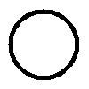
NONE is just a plain round circle with no bumps or lobes.
-
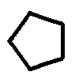
NSIDE is similar to a C rosette on traditional rose engines.
It is made from an n-sided polygon (i.e. triangle, square, pentagon, hexagon, etc).
At some amplitude, it will accurately reproduce the n-sided polygon.
-
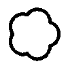
FLOWER is similar to a D rosette on traditional rose engines.
It is the inverse of the N-Side rosette.
That is, you get the same effect from rubbing on the front side of a Flower rosette
as you get by rubbing on the back of an N-Side rosette.
-
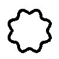
SINE is similar to an A rosette on traditional rose engines.
The lobes are defined by a sine wave function.
-
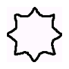
HALFSINE is the first half of a sine wave.
-
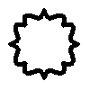
HEART is similar to an F rosette on traditional rose engines.
With a single repeat, it will show a traditional heart shape.
With more repeats, the heart pattern is repeated around the rosette.
-
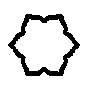
LOTUS is similar to the lotus pattern on a rosette made for the MDF rose engine by Jon Magill.
-
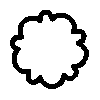
BIGSMALL is similar to a B rosette on traditional rose engines.
The larger lobe consumes 2/3 of the pattern repeat distance,
and the smaller lobe consumes 1/3 of the pattern repeat distance.
Each lobe is the same as a Flower lobe.
-
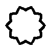
TRIANGLE is a simple triangle that is "bent" around the round shape of a rosette.
-
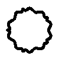
TUDOR is inspired by a traditional tudor rose pattern.
Although the traditional pattern has 5 repeats, the user is free to specify any number of repeats around the rosette.
Holtzapffel Patterns
For those who prefer using the Holtzapffel rosette system, I've added the full library of lettered rosettes.
For more details on the Holtzapffel rosettes, John Edwards has spent a lot of time documenting the characteristics of the
various rosettes on historic machines.
Also, John Tarpley recently published an excellent article on rosettes in the Lindow newsletter (Vol 3, Number 1).
The numbering system used with the Holtzapffel rosettes is inconsistent.
Computers don't like inconsistencies in handling parameters.
So for the purpose of this program the following guidelines are used:
-
The amplitude parameter is always the maximum amplitude of the total pattern.
-
The repeat parameter is always the number of repetitions of the total pattern.
-
Some patterns use the optional n2 parameter which is the number of small bumps within a repeat.
For example -- an E rosette with 5 repeats and n2=6 will have a total of 30 bumps.
-
Some patterns use the optional amplitude2 parameter which is the amplitude of the small bumps as a
fraction if the total amplitude.
For example -- a Q rosette with a total amplitude of 0.3" and amplitude2=0.2" will have small bumps that are
0.06" (0.3 * 0.2 = 0.06) high superimposed on the major shape.
Note that these rosettes are very close approximations to the historic Holtzapffel rosettes.
There is insufficient documentation to reproduce the exact patterns without digitizing the actual historic rosettes.
Following is a list of the lettered Holtzapffel rosettes:
-
HoltzA
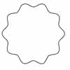
Sine Wave.
-
HoltzB
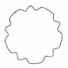
Interrupted sine wave, where every third valley is omitted.
-
HoltzC
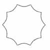
Concave dips between peaks.
-
HoltzD
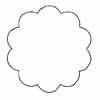
Convex bumps, i.e. the opposite of C.
-
HoltzE
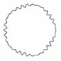
Sine wave gradually diminishing and then increasing in amplitude.
This pattern uses the optional n2 parameter.
-
HoltzF
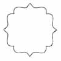
Heart shape or Cupid’s Bow shape.
-
HoltzG
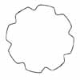
Like 'B' except that every second wave is omitted.
-
HoltzH
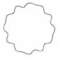
Like 'E' except that there is just one diminution after two full-sized waves.
This pattern uses the optional n2 and amp2 parameters.
-
HoltzI
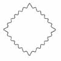
A 'Puffy Polygon' with a sine wave superimposed.
This pattern uses the optional n2 and amp2 parameters.
-
HoltzJ
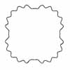
Arcs of eccentric circles then superimposing on each resulting arc a sine wave.
This pattern uses the optional n2 and amp2 parameters.
-
HoltzK
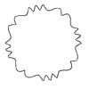
Cupid’s Bow shapes, as in 'F', each separated by two elements of a sine wave.
-
HoltzL
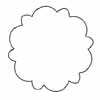
Each element comprises a short wave followed by a wave of twice its length.
-
HoltzM
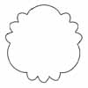
Each element comprises three short convex bumps followed by a long bump of three times the length of a short bump.
-
HoltzN
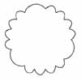
Each element comprises four short convex bumps followed by a long bump of twice the length of a short bump.
-
HoltzO
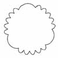
Each element comprises five short convex bumps followed by a long bump of three times the length of a short bump.
-
HoltzP
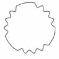
Interrupted sine wave, where the fifth and sixth valleys are omitted.
-
HoltzQ
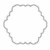
A 'Puffy Polygon' with convex bumps superimposed.
This pattern uses the optional n2 and amp2 parameters.
-
HoltzR
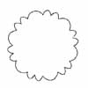
Two short convex bumps followed by one convex bumps of twice the length of the short ones.
-
HoltzS
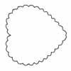
Heart shape with superimposed convex bumps.
This pattern uses the optional n2 and amp2 parameters.